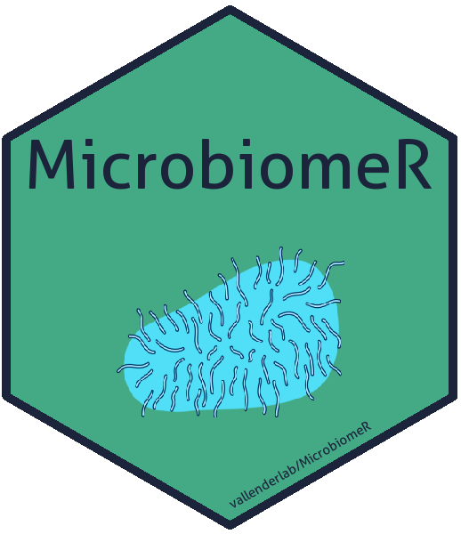

MicrobiomeR 
An R package for microbiome analysis that incorporates phyloseq, metacoder, taxa, and microbiome in order to standardize and simplify common microbiome workflows.
Installation
We are currently not on CRAN or Bioconductor:
library(devtools) # Load the devtools package
install_github("vallenderlab/MicrobiomeR") # Install the packagePlease visit https://vallenderlab.github.io/MicrobiomeR/ for extensive documentation of the package.
Workflow Features
- Standardization of data wrangling.
- Phyloseq for data import.
- Taxa for the primary data object (Taxmap).
- Proprietary data formatting and validation.
- Phyloseq inspired filtering for
taxa::taxmapobjects.- Metacoder/taxa for mainstream filtering.
- Proprietary basic filtering for samples, taxonomies, and OTUs.
- Proprietary advanced filtering (phyloseq-style).
- Other Proprietary filtering functions for observation data.
- Metacoder enabled statistical analysis functions.
- Various visualization options.
- Output Directories
- Color Palettes
- Heat Trees
- Correlation Plots
- Stacked Bar Plot
- Alpha Diversity Plot
- Ordination Plot
Contributing to MicrobiomeR
- Our code style is based on Google’s R style developed by Hadley Wickham.
- Please note that the
MicrobiomeRproject is released with a Contributor Code of Conduct. By contributing to this project, you agree to abide by its terms. - View our contributing documentation for more details.